Custom SRP 3.1.0
Forward+ Settings
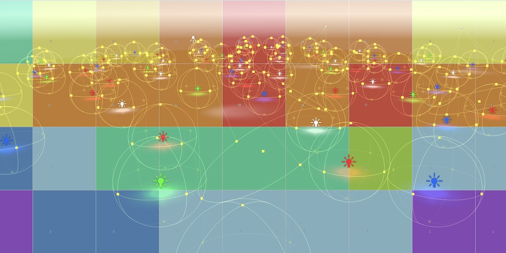
This tutorial is made with Unity 2022.3.43f1 and follows Custom SRP 3.0.0.
Deprecated Settings
In the previous tutorial we upgraded our project to a new major version and made some changes to the settings of our RP. We're going to focus on settings this time, beginning with cleaning them up a bit.
Hiding Old Settings
We moved the settings from CustomRenderPipelineAsset to a dedicated class, but we kept the old ones to provide an automatic upgrade path. We'll remove the old settings when upgrading to major version 4, but in the mean time we'll hide the old ones, by adding the HideInInspector attribute to them all. I only show the change for the first setting. Also, we can remove the deprecated section header.
// [Header("Deprecated Settings")][SerializeField, Tooltip("Moved to settings."), HideInInspector] CameraBufferSettings cameraBuffer = new() { … }
Now the settings still exist but no longer clutter the inspector. However, that makes it harder to get rid of old references to the post FX settings and camera renderer shader. These are references to assets that we ideally clear as they are no longer needed after automatic conversion. So let's add code that sets them to null in CreateRenderpipeline, after they have been copied. We want to do this only once to prevent the editor from potentially detecting a change to the asset when not needed.
protected override RenderPipeline CreatePipeline()
{
if ((settings == null || settings.cameraRendererShader == null) &&
cameraRendererShader != null)
{
…
}
if (postFXSettings != null)
{
postFXSettings = null;
}
if (cameraRendererShader != null)
{
cameraRendererShader = null;
}
return new CustomRenderPipeline(settings);
}
Lights Per Object
Now that we have a Forward+ lighting solution the old approach based on lights per object can be considered obsolete as it is strictly inferior. It requires more work to figure out which lights affect each object and interferes with all forms of batching. The only reason to keep it would be to support very old systems that do not support structured buffers. Even then we could refactor things to work with constant buffers, but we're not going to do either.
So we mark the CustomRenderPipelineSettings.useLightsPerObject setting as deprecated, moving it to a new deprecated settings section at the bottom. For now the lights-per-object approach remains functional, but we'll remove it when upgrading our project to version 4.
public bool useSRPBatcher = true;//useLightsPerObject = true;… public Shader cameraRendererShader, cameraDebuggerShader; [Header("Deprecated Settings")] [Tooltip("Deprecated, lights-per-object drawing mode will be removed.")] public bool useLightsPerObject;
New Settings
We're also going to introduce two new configuration options specifically for Forward+ rendering, replacing constants that we used in the previous tutorial to keep things simple at that time.
Tile Size
We used a fixed screen-space tile size of 64×64 pixels, which is a reasonable default but might not be the best option. Making the tile size configurable makes it easy to compare the performance of different sizes.
Introduce a new serializable ForwardPlusSettings struct in which we'll group all Forward+ settings. Initially it only contains the tile size, which is an enum. Sizes 16, 32, 64, 128, and 256 are all reasonable values to include, so let's put them in the enum. The enum labels cannot start with a digit, so we prefix them with an underscore, which will be hidden in the inspector. Let's also define zero as the default, which will match our current size, being 64.
It isn't strictly necessary to use power-of-two sizes, but our debug visualization will fail if we use different sizes. It also cannot handle sizes smaller than 16, as those offer too little space for the light count number to be displayed.
using UnityEngine;
[System.Serializable]
public struct ForwardPlusSettings
{
public enum TileSize
{
Default, _16 = 16, _32 = 32, _64 = 64, _128 = 128, _256 = 256
}
[Tooltip("Tile size in pixels per dimension, default is 64.")]
public TileSize tileSize;
}
Add a field for it to CustomRenderPipelineSettings.
public bool useSRPBatcher = true; public ForwardPlusSettings forwardPlus; public ShadowSettings shadows;
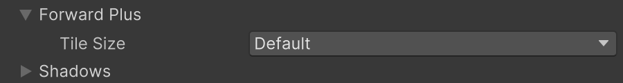
Now we're going to adjust LightingPass so it uses the configured size instead of a fixed value. First get rid of the tileScreenPixelSize constant.
tileDataSize = maxLightsPerTile + 1;//tileScreenPixelSize = 64;
Then add a parameter for the new settings to Setup and use it to determine the tile screen pixel size when needed. As we need it for a floating-point division we immediately define it as a float.
void Setup(
CullingResults cullingResults,
Vector2Int attachmentSize,
ForwardPlusSettings forwardPlusSettings,
ShadowSettings shadowSettings,
bool useLightsPerObject,
int renderingLayerMask)
{
…
float tileScreenPixelSize = forwardPlusSettings.tileSize <= 0 ?
64f : (float)forwardPlusSettings.tileSize;
screenUVToTileCoordinates.x =
attachmentSize.x / tileScreenPixelSize;
screenUVToTileCoordinates.y =
attachmentSize.y / tileScreenPixelSize;
…
}
Add the new parameter to Record and pass it to Setup.
public static LightResources Record(
RenderGraph renderGraph,
CullingResults cullingResults,
Vector2Int attachmentSize,
ForwardPlusSettings forwardPlusSettings,
ShadowSettings shadowSettings,
bool useLightsPerObject,
int renderingLayerMask)
{
using RenderGraphBuilder builder = renderGraph.AddRenderPass(
sampler.name, out LightingPass pass, sampler);
pass.Setup(cullingResults, attachmentSize,
forwardPlusSettings, shadowSettings,
useLightsPerObject, renderingLayerMask);
…
}
And finally provide the settings in CameraRenderer.Render. That's all we need to do to make the tile size configurable.
LightResources lightResources = LightingPass.Record( renderGraph, cullingResults, bufferSize, settings.forwardPlus, shadowSettings, useLightsPerObject, cameraSettings.maskLights ? cameraSettings.renderingLayerMask : -1);
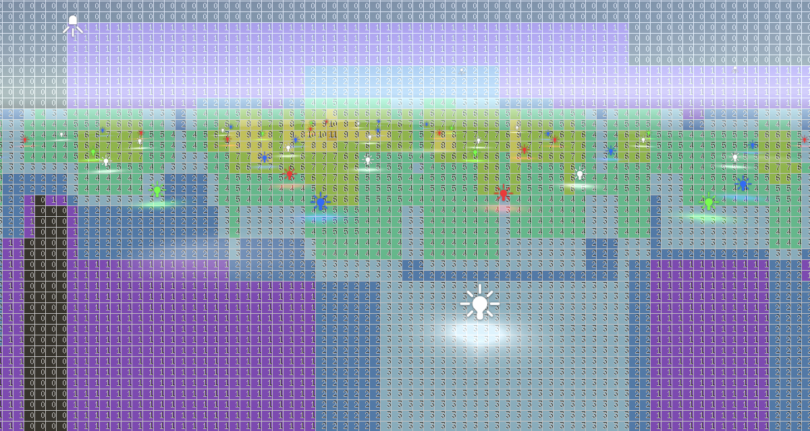
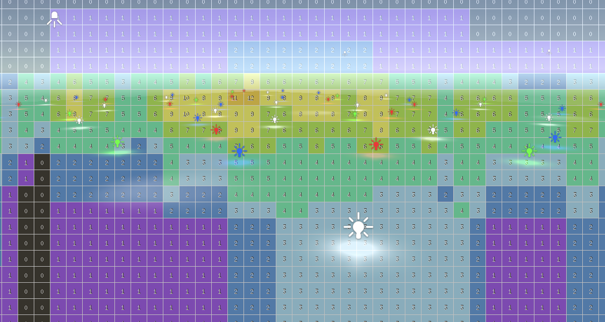
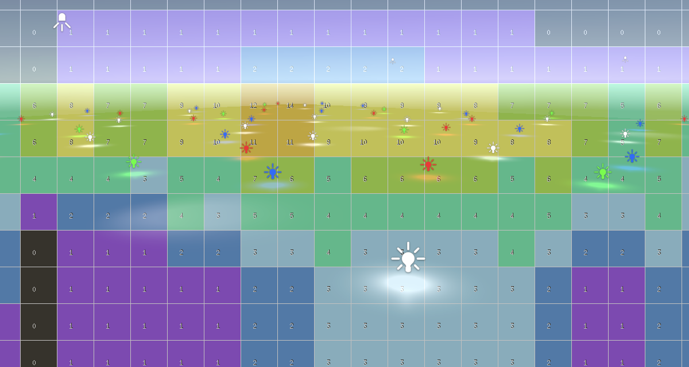
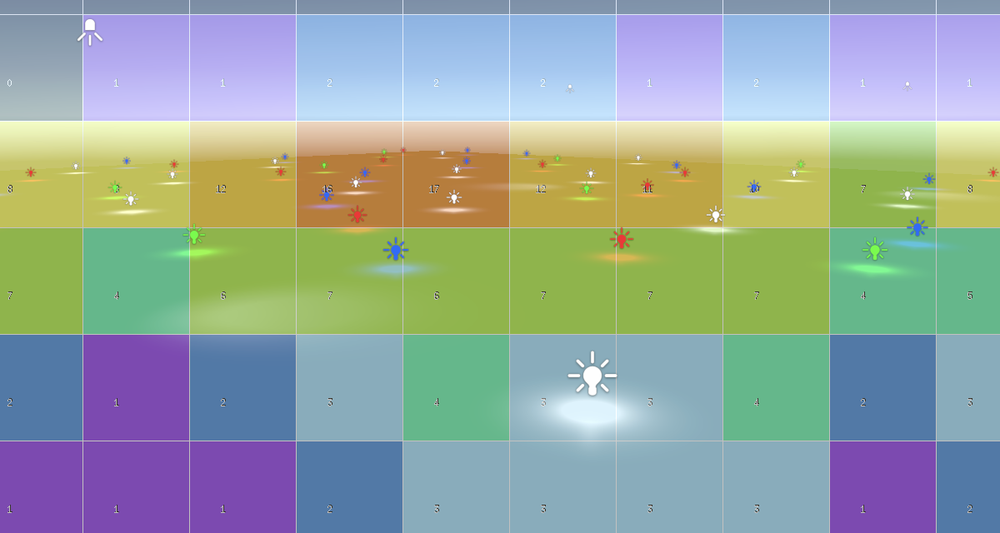
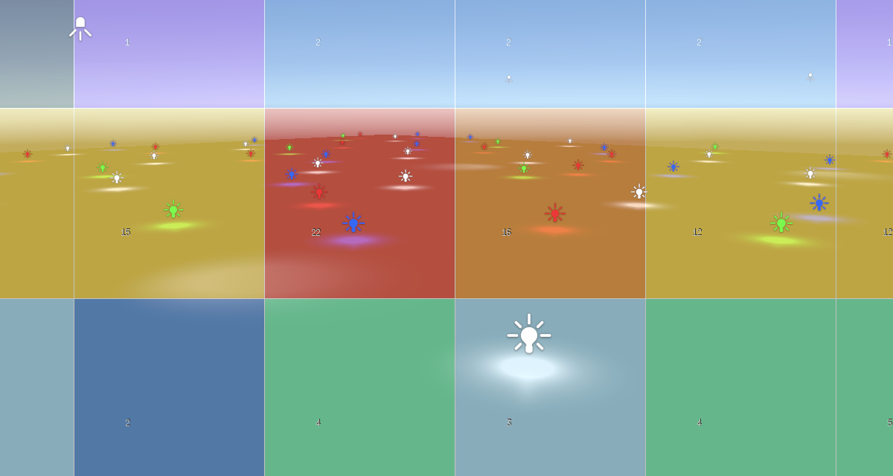
Small tiles seem appealing because it means less lights per tile. However, it also means that more tiles need to be evaluated, which requires more CPU work and more data needs to be copied to the GPU. If the tile size is smaller than the warp/wave tile size of the GPU it also means that fragment evaluation diverges when neighboring tiles don't match, which can lead to worse GPU performance. We're not using wave intrinsics to alleviate this because of lack of support. In contrast, large tiles that cover multiple GPU tiles are better for both the CPU and GPU using these criteria. However, they will contain more lights and thus require more time to evaluate on the GPU, and more of those lights will end up not affecting the rendered fragment. So there isn't a single best tile size. Try it out and see which works best, given a scene and specific hardware. That's why it make sense to make it configurable.
Max Lights Per Tile
We can also add a setting to control the maximum allowed lights per tile. This allows us to reduce or increase the tile data size. For example, if we set a hard limit of at most eight lights per scene for a game, then we don't need to reserve space for up to 31 lights per tile.
Add an integer field to control the max lights per tile to ForwardPlusSettings. We use zero as the minimum and default value, which will match our current max, which is 31. Use a range attribute to control the value, with 99 as a very high maximum.
[Tooltip("Tile size in pixels per dimension, default is 64.")]
public TileSize tileSize;
[Range(0, 99)]
[Tooltip("Maximum allowed lights per tile, 0 means default, which is 31.")]
public int maxLightsPerTile;
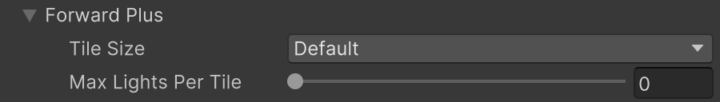
Remove the maxLightsPerTile constant from LightingPass, along with the tileDatSize constant that depends on it.
maxOtherLightCount = 128;//maxLightsPerTile = 31,//tileDataSize = maxLightsPerTile + 1;
We instead makes these two values variable, replacing them with fields.
Vector2Int tileCount; int maxLightsPerTile, tileDataSize;
Set them in Setup if needed.
if (!useLightsPerObject)
{
maxLightsPerTile = forwardPlusSettings.maxLightsPerTile <= 0 ?
31 : forwardPlusSettings.maxLightsPerTile;
tileDataSize = maxLightsPerTile + 1;
…
}
The only other change that we have to make is in Record, because the tile data size is no longer available as a constant. Instead we have to access the field from the pass.
if (!useLightsPerObject)
{
pass.tilesBuffer = builder.WriteComputeBuffer(
renderGraph.CreateComputeBuffer(new ComputeBufferDesc
{
name = "Forward+ Tiles",
count = pass.TileCount * pass.tileDataSize,
stride = 4
}));
}
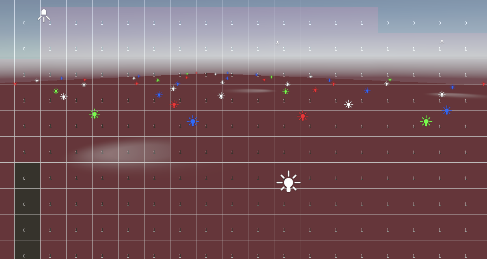
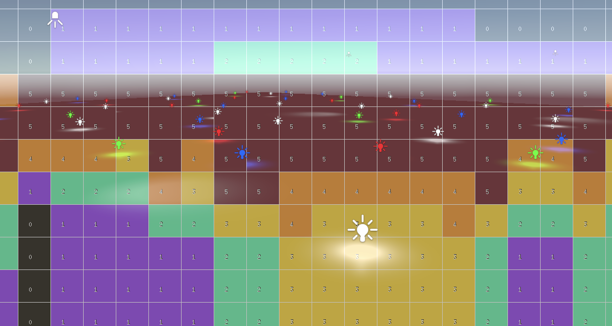
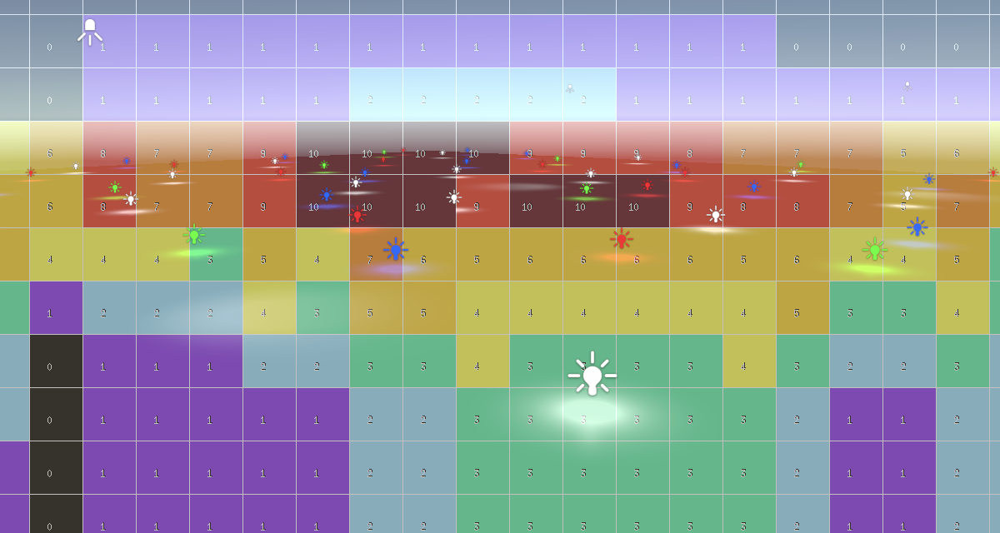
When the limit is exceeded for a tile lights will be omitted, which can be very obvious visually, especially if a light does get included in an adjacent tile. Ideally the max is as low as possible, but you have to make sure that it is high enough for your scenes.
Reducing Tile Size
If max lights per tile is already variable, it is sensible to also adjust the tile data size based on how many lights are visible for the current frame. If there are only three lights visible we don't have to reserve space for more per tile.
This seems efficient, but if we do this the tile data size can vary a lot and we can end up reserving compute buffers of different sizes each frame. The render graph pools buffers so it doesn't have to allocate new ones al the time—which also requires C# object allocations—but its caching is limited. If we consistently request a buffer of the same size every frame we can assume that it always gets reused. So let's reserve a buffer based on the configured maximum, but only fill it based on the required maximum per frame. This way the amount of memory that we claim remains the same but we only use what we need.
The tileDataSize field that we already have will be used for the size that is needed per frame. Besides that we also introduce a new maxTileDataSize field that will be based on the configured maximum. We could do without the extra field, but this makes it clearer.
int maxLightsPerTile, tileDataSize, maxTileDataSize;
In Setup we now only set this new max tile data size.
maxTileDataSize = maxLightsPerTile + 1;
Then in SetupLights we determine the required maximum amount of lights per tile, which is the minimum of the configured max and the amount of visible lights. then we use that to set the tile data size. And we also only use the required maximum for the job.
void SetupLights(int renderingLayerMask)
{
NativeArray<int> indexMap = useLightsPerObject ?
cullingResults.GetLightIndexMap(Allocator.Temp) : default;
NativeArray<VisibleLight> visibleLights = cullingResults.visibleLights;
int requiredMaxLightsPerTile = Mathf.Min€(
maxLightsPerTile, visibleLights.Length);
tileDataSize = requiredMaxLightsPerTile + 1;
…
forwardPlusJobHandle = new ForwardPlusTilesJob
{
…
maxLightsPerTile = requiredMaxLightsPerTile,
tilesPerRow = tileCount.x,
tileDataSize = tileDataSize
}.ScheduleParallel(TileCount, tileCount.x, default);
…
}
At this point the buffer, job size, tile data native array, and how much data we copy to the GPU all depend on the per-frame required maximum. To use a fixed size for the compute buffer make it depend on maxTileDataSize instead of tileDataSize in Render.
pass.tilesBuffer = builder.WriteComputeBuffer(
renderGraph.CreateComputeBuffer(new ComputeBufferDesc
{
name = "Forward+ Tiles",
count = pass.TileCount * pass.maxTileDataSize,
stride = 4
}));
We've added two configuration options for Forward+ rendering and cleaned up old settings. In the future we will adjust some other configuration options.
The next tutorial is Custom SRP 3.2.0.
license repository PDF